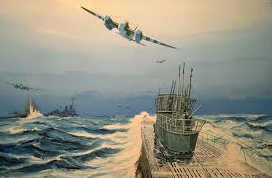

Bataille de l'Atlantique
La bataille de l'Atlantique a été une campagne cruciale de la Seconde Guerre mondiale, qui s'est déroulée de septembre 1939 à mai 1945.
- Objectif : Contrôler les routes maritimes de l'Atlantique Nord pour le ravitaillement des Alliés en Europe.
- Protagonistes : Les Alliés (Grande-Bretagne, Canada, États-Unis) et l'Allemagne nazie (U-boot).
- Stratégies :
- Allemands : Utilisation de sous-marins U-boot pour couler les navires alliés.
- Alliés : Formation de convois escortés, utilisation du radar et du sonar pour détecter les sous-marins.
- Déroulement :
- 1939-1941 : Les U-boot infligent de lourdes pertes aux Alliés.
- 1943 : Année décisive avec l'amélioration des technologies et des tactiques alliées. Les pertes allemandes augmentent.
- 1944-1945 : Supériorité alliée confirmée et diminution des pertes alliées. La bataille se termine avec la défaite de l'Allemagne.
- Importance : La bataille a été essentielle pour maintenir la capacité des Alliés à poursuivre la guerre en Europe et a entraîné des avancées technologiques significatives.
